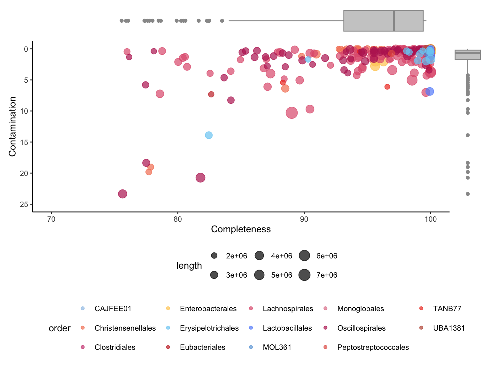
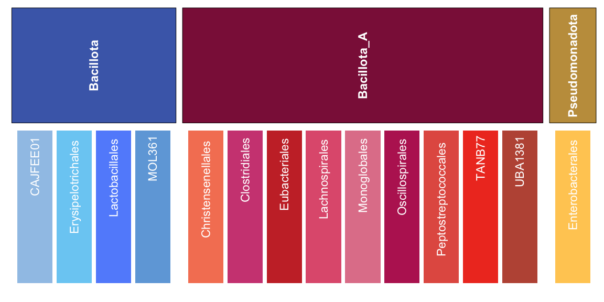
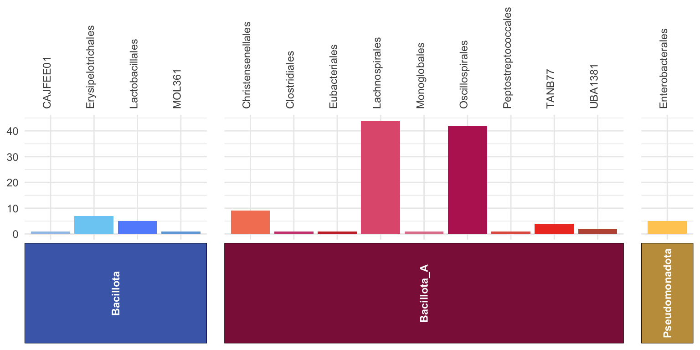
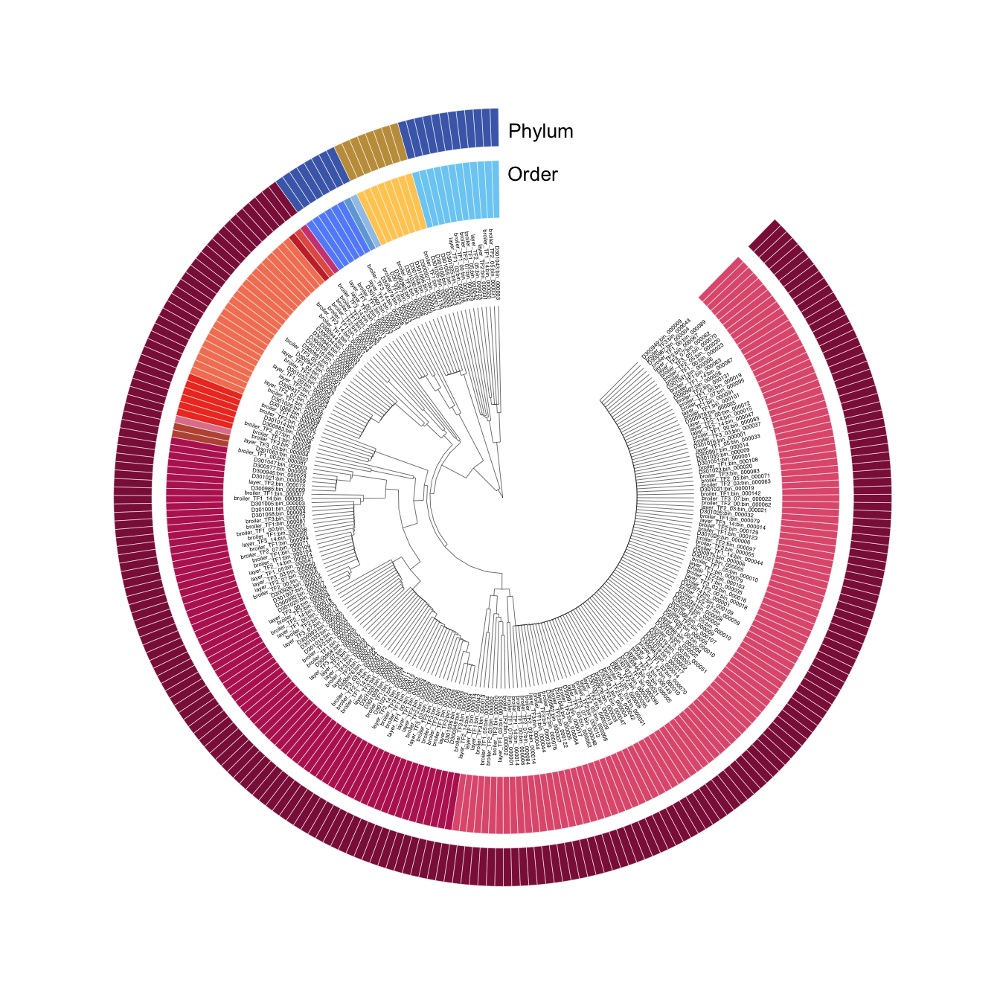
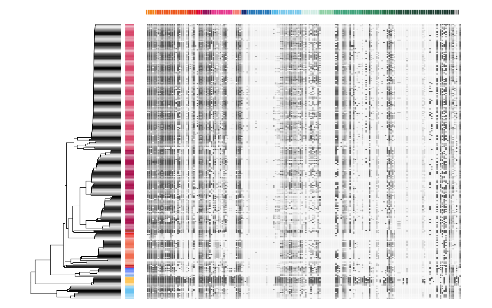
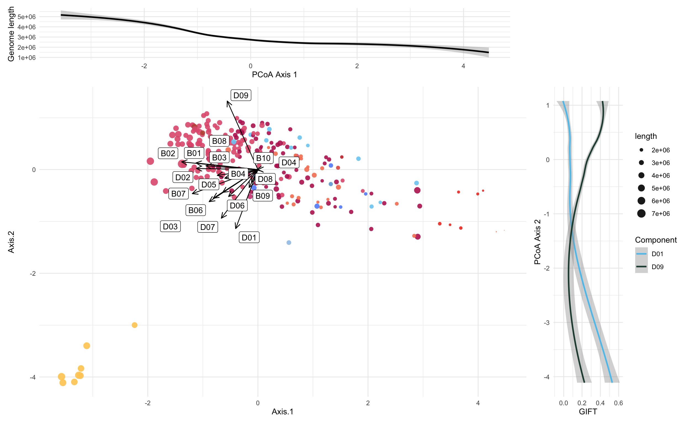
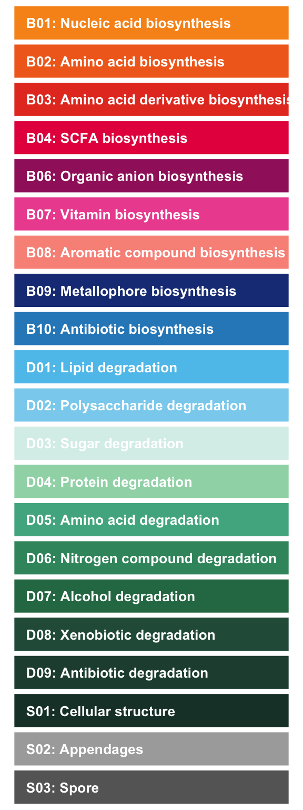
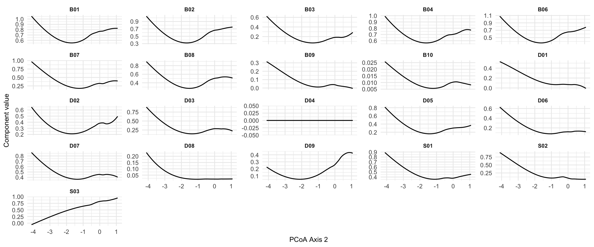

5 MAG Catalogue Overview
5.1 Overview
This chapter provides an overview of the Metagenome-Assembled Genome (MAG) catalogue used in this analysis. It displays quality metrics, taxonomic composition, and other properties of the 251 species-representative genomes.
5.3 Genome Quality Summary
This section displays summary statistics for genome quality metrics (completeness and contamination) across all MAGs in the catalogue.
# Calculate and display summary statistics for genome quality metrics
genome_quality_summary <- data.frame(
Metric = c("Completeness", "Contamination"),
Median = c(median(genome_metadata$completeness, na.rm = TRUE),
median(genome_metadata$contamination, na.rm = TRUE)),
Q1 = c(quantile(genome_metadata$completeness, 0.25, na.rm = TRUE),
quantile(genome_metadata$contamination, 0.25, na.rm = TRUE)),
Q3 = c(quantile(genome_metadata$completeness, 0.75, na.rm = TRUE),
quantile(genome_metadata$contamination, 0.75, na.rm = TRUE))
) %>%
mutate(IQR = Q3 - Q1)
knitr::kable(genome_quality_summary, digits = 2, caption = "Summary statistics (median and IQR) for genome quality metrics")| Metric | Median | Q1 | Q3 | IQR |
|---|---|---|---|---|
| Completeness | 97.40 | 93.39 | 99.74 | 6.34 |
| Contamination | 0.66 | 0.22 | 1.73 | 1.51 |
5.4 Genome Circularity and Taxonomic Distribution
# Calculate circularity statistics for all genomes
genome_circularity_stats <- genome_metadata %>%
summarise(
circular_count = sum(circularity == "1"),
total_count = n(),
circular_percent = 100 * circular_count / total_count
)
# Display circularity statistics
knitr::kable(genome_circularity_stats, digits = 2, caption = "Genome circularity statistics")| circular_count | total_count | circular_percent |
|---|---|---|
| 0 | 251 | 0 |
# Calculate taxonomic distribution statistics by order
order_distribution_stats <- order_metadata %>%
summarise(
genera_count = sum(number_of_genera),
lachnospirales_count = sum(number_of_genera[order == "Lachnospirales"]),
lachnospirales_perc = 100 * lachnospirales_count / genera_count,
oscillospirales_count = sum(number_of_genera[order == "Oscillospirales"]),
oscillospirales_perc = 100 * oscillospirales_count / genera_count
)
# Display taxonomic distribution
knitr::kable(order_distribution_stats, digits = 2, caption = "Taxonomic distribution: Number of genera in major orders")| genera_count | lachnospirales_count | lachnospirales_perc | oscillospirales_count | oscillospirales_perc |
|---|---|---|---|---|
| 124 | 44 | 35.48 | 42 | 33.87 |
5.5 Genome Quality Visualization
This section creates visualizations showing the relationship between completeness and contamination, colored by taxonomic order.
# Generate quality biplot showing completeness vs contamination
# Points are colored by taxonomic order and sized by genome length
genome_biplot <- genome_metadata %>%
select(c(genome,domain,order,completeness,contamination,length)) %>%
arrange(match(genome, rev(genome_tree$tip.label))) %>% #sort MAGs according to phylogenetic tree
ggplot(aes(x=completeness,y=contamination,size=length,color=order)) +
geom_point(alpha=0.7) +
xlim(c(70,100)) +
ylim(c(25,0)) +
scale_color_manual(values=order_colors) +
labs(y= "Contamination", x = "Completeness") +
theme_classic() +
theme(legend.position = "none")
#Generate contamination boxplot
genome_contamination <- genome_metadata %>%
ggplot(aes(y=contamination)) +
ylim(c(25,0)) +
geom_boxplot(colour = "#999999", fill="#cccccc") +
theme_void() +
theme(legend.position = "none",
axis.title.x = element_blank(),
axis.title.y = element_blank(),
axis.text.y=element_blank(),
axis.ticks.y=element_blank(),
axis.text.x=element_blank(),
axis.ticks.x=element_blank(),
plot.margin = unit(c(0, 0, 0.40, 0),"inches")) #add bottom-margin (top, right, bottom, left)
#Generate completeness boxplot
genome_completeness <- genome_metadata %>%
ggplot(aes(x=completeness)) +
xlim(c(70,100)) +
geom_boxplot(colour = "#999999", fill="#cccccc") +
theme_void() +
theme(legend.position = "none",
axis.title.x = element_blank(),
axis.title.y = element_blank(),
axis.text.y=element_blank(),
axis.ticks.y=element_blank(),
axis.text.x=element_blank(),
axis.ticks.x=element_blank(),
plot.margin = unit(c(0, 0, 0, 0.50),"inches")) #add left-margin (top, right, bottom, left)
# Align margins
genome_biplot <- genome_biplot + theme(plot.margin = margin(5, 5, 5, 5))
genome_completeness <- genome_completeness + theme(plot.margin = margin(0, 5, 0, 5))
genome_contamination <- genome_contamination + theme(plot.margin = margin(5, 0, 5, 0))
# Compose layout
top_row <- genome_completeness + plot_spacer() + plot_layout(widths = c(15, 1))
bottom_row <- genome_biplot + genome_contamination + plot_layout(widths = c(15, 1))
# Stack rows
MAG_plot <- (top_row / bottom_row + plot_layout(heights = c(2, 15))) + plot_layout(guides = "collect") &
theme(legend.position = "bottom", legend.box = "vertical")
MAG_plot
5.6 MAG catalogue phyla and order colours
MAG_tax_df <- order_metadata %>%
select(order, phylum) %>%
distinct() # ensure no duplicates
# get the phylum order that facet_grid2 will use (alphabetical by default)
phylum_order <- MAG_tax_df %>%
distinct(phylum) %>%
arrange(phylum) %>%
pull(phylum)
# phylum strip colors in correct order
strip_colors <- phylum_colors[phylum_order]
# plot: use y = 1 directly
ggplot(MAG_tax_df, aes(x = order, y = 1, fill = order)) +
geom_col(width = 0.9, show.legend = FALSE) +
geom_text(aes(label = order),
angle = 90, color = "white", size = 3,
hjust = 1.1, vjust = 0.5) +
scale_fill_manual(values = order_colors) +
facet_grid2(
. ~ phylum,
scales = "free_x",
space = "free",
strip = strip_themed(
background_x = elem_list_rect(fill = strip_colors),
text_x = elem_list_text(angle = 90, color = "white", face = "bold")
)
) +
theme_minimal(base_size = 11) +
theme(
axis.text = element_blank(),
axis.ticks = element_blank(),
axis.title = element_blank(),
panel.grid = element_blank(),
panel.spacing = unit(0.3, "lines")
)
5.7 MAG catalogue phyla and order colours, and genera number
MAG_tax_df <- order_metadata %>%
select(phylum, order, number_of_genera) %>%
distinct() %>%
mutate(
order_color = order_colors[order],
phylum_color = phylum_colors[phylum]
)
# 2. Get facet strip colors in correct order
phylum_order <- MAG_tax_df %>%
distinct(phylum) %>%
arrange(phylum) %>%
pull(phylum)
strip_colors <- unname(phylum_colors[phylum_order])
# 3. Plot
ggplot(MAG_tax_df, aes(x = order, y = number_of_genera, fill = order)) +
# Bars
geom_col(width = 0.9, show.legend = FALSE) +
# Color scale
scale_fill_manual(values = order_colors) +
# Facet by phylum (strip on bottom)
facet_grid2(
. ~ phylum,
scales = "free_x",
space = "free_x",
switch = "x",
strip = strip_themed(
background_x = elem_list_rect(fill = strip_colors),
text_x = elem_list_text(angle = 90, color = "white", face = "bold")
)
) +
# Flip x-axis title and text to top
scale_x_discrete(position = "top") +
# Theme
theme_minimal(base_size = 11) +
theme(
axis.text.x = element_text(angle = 90, vjust = 0.5, hjust = 0),
axis.title = element_blank(),
panel.spacing = unit(1, "lines"),
strip.background = element_blank(),
strip.placement = "outside"
)
5.8 Genome phylogeny plot
# Generate the phylum color heatmap
phylum_heatmap <- genome_metadata %>%
arrange(match(genome, genome_tree$tip.label)) %>%
select(genome,phylum) %>%
mutate(phylum = factor(phylum, levels = unique(phylum))) %>%
column_to_rownames(var = "genome")
# Generate the order color heatmap
order_heatmap <- genome_metadata %>%
arrange(match(genome, genome_tree$tip.label)) %>%
select(genome, order) %>%
mutate(order = factor(order, levels = unique(order))) %>%
column_to_rownames(var = "genome")
# Generate the basal tree
circular_tree <- force.ultrametric(genome_tree, method="extend") %>% # extend to ultrametric for the sake of visualisation
ggtree(., layout="fan", open.angle=10, size=0.1)***************************************************************
* Note: *
* force.ultrametric does not include a formal method to *
* ultrametricize a tree & should only be used to coerce *
* a phylogeny that fails is.ultrametric due to rounding -- *
* not as a substitute for formal rate-smoothing methods. *
***************************************************************# Add the phylum ring
circular_tree <- gheatmap(circular_tree,
phylum_heatmap,
offset = 1.3, width = 0.2, colnames = FALSE) +
scale_fill_manual(values = phylum_colors, name = "Phylum") +
geom_tiplab2(size = 1, hjust = -0.1) +
theme(plot.margin = margin(0, 0, 0, 0),
panel.margin = margin(0, 0, 0, 0))
# Flush color scale for the next ring
circular_tree <- circular_tree + new_scale_fill()
# Add order ring
circular_tree <- gheatmap(circular_tree,
order_heatmap,
offset = 0.55, width = 0.3, colnames = FALSE) +
scale_fill_manual(values = order_colors, name = "Order") +
theme(legend.position = "right")
# # Flush color scale to enable a new color scheme in the next ring
# circular_tree <- circular_tree + new_scale_fill()
#
# circular_tree <- circular_tree +
# new_scale_fill() +
# scale_fill_manual(values = c("1" = "#fcbb6d", "0" = "#465c7a"),
# name = 'Circularized genomes') +
# geom_fruit(
# data = genome_metadata,
# geom = geom_bar,
# # Use as.factor to map circularity
# mapping = aes(x = 1, y = genome, fill = circularity),
# offset = 1.0,
# orientation = "y",
# stat = "identity")
# Add text
circular_tree <- circular_tree +
annotate('text', x=3.0, y=0, label=' Order', size=3.5) +
annotate('text', x=3.4, y=0, label=' Phylum', size=3.5) #+
# annotate('text', x=4.2, y=0, label=' Circularised', size=3.5)
#Plot circular tree
p <-circular_tree %>% open_tree(45) %>% rotate_tree(90) +
theme(legend.position = "bottom", legend.box = "vertical")
# print(p)
# ggsave(filename = "results/figures/MAG_macro_tree.pdf", plot = p,
# units = "cm", width = 29, height = 40)5.9 Genome phylogeny plot without legend

#Aggregate bundle-level GIFTs into the compound level
GIFTs_elements <- to.elements(genome_gifts,GIFT_db)
#Aggregate element-level GIFTs into the function level
GIFTs_functions <- to.functions(GIFTs_elements,GIFT_db)
#Aggregate function-level GIFTs into overall Biosynthesis, Degradation and Structural GIFTs
GIFTs_domains <- to.domains(GIFTs_functions,GIFT_db)5.10 Functional overview
function_group_colors <- c(
B01 = "#f7941d", # topmost color (orange)
B02 = "#f26c1f", # apricot-orange
B03 = "#e63e26", # red-orange
B04 = "#e6004c", # deep pink
B06 = "#a1246b", # magenta
B07 = "#ed559f", # pink
B08 = "#f99388", # peach
B09 = "#1a3c85", # dark blue
B10 = "#2b8ac4", # blue
D01 = "#5ec4ed", # sky blue
D02 = "#89d2ef", # pale blue
D03 = "#d9efe9", # pale mint
D04 = "#9ed7b4", # light green
D05 = "#4fb18f", # mint green
D06 = "#3b946d", # dark teal
D07 = "#2a7854", # deeper teal
D08 = "#295b47", # forest green
D09 = "#234c3f", # deep green
S01 = "#1b3e34", # nearly black-green
S02 = "#aaaaaa", # light grey
S03 = "#666666" # dark grey
)order_heatmap <- genome_metadata %>%
arrange(match(genome, genome_tree$tip.label)) %>%
select(genome,order) %>%
column_to_rownames(var = "genome")
# Aggregate basal GIFT into elements
function_table <- genome_gifts %>%
to.elements(., GIFT_db)
# 1. Base tree
function_tree <- force.ultrametric(genome_tree, method="extend") %>%
ggtree(size = 0.3) ***************************************************************
* Note: *
* force.ultrametric does not include a formal method to *
* ultrametricize a tree & should only be used to coerce *
* a phylogeny that fails is.ultrametric due to rounding -- *
* not as a substitute for formal rate-smoothing methods. *
***************************************************************# 2. First heatmap: add order (row) color strip
function_tree <- gheatmap(
function_tree,
order_heatmap,
offset = 0, width = 0.1, colnames = FALSE
) +
scale_fill_manual(values = order_colors) +
labs(fill = "Order")
# 5. Reset fill scale again for main function matrix
function_tree <- function_tree + new_scale_fill()
# 6. Add the full function table heatmap (numeric)
function_tree <- gheatmap(
function_tree,
function_table,
offset = 0.5,
width = 3.5,
colnames = FALSE
) +
vexpand(0) + # vexpand(0.08) +
coord_cartesian(clip = "off") +
scale_fill_gradient(low = "#f4f4f4", high = "#666666", na.value = "white") +
labs(fill = "GIFT")
# 7. Final plot
function_tree <- function_tree +
theme_void() +
theme(legend.position = "none")
# function_tree# Join to get Code_function (e.g. B01, D01) for each Code_element (e.g. B0101, B0204)
column_annotation <- tibble(Code_element = colnames(function_table)) %>%
left_join(
GIFT_db %>%
select(Code_element, Code_function) %>%
distinct(Code_element, .keep_all = TRUE),
by = "Code_element"
)
# Create a 1-row matrix with Code_function values
column_annotation_matrix <- matrix(
column_annotation$Code_function,
nrow = 1,
dimnames = list("Function_group", column_annotation$Code_element)
)
# Ensure Code_element order matches your heatmap
column_annotation_df <- column_annotation %>%
distinct(Code_element, Code_function)
column_annotation_df$Code_element <- factor(
column_annotation_df$Code_element,
levels = column_annotation$Code_element
)
# Plot annotation strip
annotation_strip <- ggplot(column_annotation_df, aes(x = Code_element, y = 1, fill = Code_function)) +
geom_tile(color = "white", linewidth = 0.1) +
scale_fill_manual(values = function_group_colors, na.translate = FALSE) +
theme_void() +
theme(
axis.text.x = element_blank(),
plot.margin = margin(0, 0, 0, 0)
) +
guides(fill = "none") +
theme_void()
# annotation_stripcombined_plot <- ((plot_spacer() | wrap_elements(annotation_strip) | plot_spacer()) + plot_layout(widths = c(10.1, 25, 1.1))) /
wrap_elements(function_tree) +
plot_layout(heights = c(0.2, 10)) # adjust strip height as needed
combined_plot
5.11 Functional distances
functional_distances <- genome_gifts %>%
to.elements(., GIFT_db) %>%
as.data.frame() %>%
stats::dist(., method = "manhattan") / ncol(genome_gifts[genome_metadata$genome, ])
mean(functional_distances)[1] 0.090358[1] 0.03338797[1] 0.30006355.12 Functional ordination
PCoA functional ordination with PCA loadings.
gift_pcoa <- genome_gifts %>%
to.elements(., GIFT_db) %>%
as.data.frame() %>%
vegdist(method="euclidean") %>%
pcoa()
gift_pcoa_rel_eigen <- gift_pcoa$values$Relative_eig[1:10]
# Get genome positions
gift_pcoa_vectors <- gift_pcoa$vectors %>% #extract vectors
as.data.frame() %>%
select(Axis.1,Axis.2) # keep the first 2 axes
gift_pcoa_eigenvalues <- gift_pcoa$values$Eigenvalues[c(1,2)]
gift_pcoa_gifts <- cov(genome_gifts, scale(gift_pcoa_vectors)) %*% diag((gift_pcoa_eigenvalues/(nrow(genome_gifts)-1))^(-0.5)) %>%
as.data.frame() %>%
rename(Axis.1=1,Axis.2=2) %>%
rownames_to_column(var="label") %>%
#get function summary vectors
mutate(func=substr(label,1,3)) %>%
group_by(func) %>%
summarise(Axis.1=mean(Axis.1),
Axis.2=mean(Axis.2)) %>%
rename(label=func) %>%
filter(!label %in% c("S01","S02","S03"))scale <- 15 # scale for vector loadings
pcoa_plot <- gift_pcoa_vectors %>%
rownames_to_column(var="genome") %>%
left_join(genome_metadata, by="genome") %>%
ggplot() +
#genome positions
scale_color_manual(values=order_colors)+
geom_point(aes(x=Axis.1,y=Axis.2, color=order, size=length),
alpha=0.9, shape=16) +
guides(color = "none") +
#scale_color_manual(values=phylum_colors) +
scale_size_continuous(range = c(0.1,5)) +
#loading positions
geom_segment(data=gift_pcoa_gifts,
aes(x=0, y=0, xend=Axis.1 * scale, yend=Axis.2 * scale),
arrow = arrow(length = unit(0.3, "cm"),
type = "open",
angle = 25),
linewidth = 0.5,
color = "black") +
#Primary and secondary scale adjustments
# scale_x_continuous(name = paste0("PCoA1 (",round(gift_pcoa_rel_eigen[1]*100, digits = 2), " %)"),
# sec.axis = sec_axis(~ . / scale)
# ) +
# scale_y_continuous(name = paste0("PCoA2 (",round(gift_pcoa_rel_eigen[2]*100, digits = 2), " %)"),
# sec.axis = sec_axis(~ . / scale)
# ) +
geom_label_repel(data = gift_pcoa_gifts,
aes(label = label, x = Axis.1 * scale, y = Axis.2 * scale),
segment.color = 'transparent') +
theme_minimal()
# pcoa_plotgift_axis_1 <- gift_pcoa_vectors %>%
rownames_to_column(var="genome") %>%
left_join(genome_metadata, by="genome") %>%
ggplot(aes(x=Axis.1, y=length)) +
geom_smooth(color = "black") +
theme_minimal() +
theme(legend.position = "none") +
labs(y = "Genome length", x = "PCoA Axis 1")
# gift_axis_1gift_df_PCoA <- genome_gifts %>%
to.elements(., GIFT_db) %>%
to.functions(., GIFT_db) %>%
as.data.frame() %>%
rownames_to_column(var="genome") %>%
left_join(genome_metadata, by="genome") %>%
left_join(gift_pcoa_vectors %>% rownames_to_column(var="genome"), by="genome")
gift_long <- gift_df_PCoA %>%
select(genome, Axis.2,
B01, B02, B03, B04, B06, B07, B08, B09, B10,
D01, D02, D03, D04, D05, D06, D07, D08, D09,
S01, S02, S03) %>%
pivot_longer(
cols = c(B01, B02, B03, B04, B06, B07, B08, B09, B10,
D01, D02, D03, D04, D05, D06, D07, D08, D09,
S01, S02, S03),
names_to = "component",
values_to = "value"
)
# Plot: x = Axis.2, y = value, colored by component (D01 vs D02)
gift_plot_PC2 <- gift_long %>%
filter(component %in% c("D01", "D09")) %>%
ggplot(aes(y = value, x = Axis.2, color = component)) +
geom_smooth() +
scale_color_manual(values = c(D01 = "#5ec4ed", D09 = "#234c3f")) +
theme_minimal() +
labs(y = "GIFT", x = "PCoA Axis 2", color = "Component") +
theme(legend.position = "right")+
coord_flip()
# gift_plot_PC2((gift_axis_1| plot_spacer()) + plot_layout(widths = c(4.5, 1))) /
((pcoa_plot | gift_plot_PC2) + plot_layout(widths = c(7, 1))) +
plot_layout(heights = c(1, 6), guides = "collect") +
theme(legend.position = "bottom") 
GIFT_db_functions <- GIFT_db %>%
select(Code_function, Function, Domain) %>%
distinct(Code_function, .keep_all = TRUE)
GIFT_db_functions Code_function Function Domain
1 B01 Nucleic acid biosynthesis Biosynthesis
2 B02 Amino acid biosynthesis Biosynthesis
3 B03 Amino acid derivative biosynthesis Biosynthesis
4 B04 SCFA biosynthesis Biosynthesis
5 B06 Organic anion biosynthesis Biosynthesis
6 B07 Vitamin biosynthesis Biosynthesis
7 B08 Aromatic compound biosynthesis Biosynthesis
8 B09 Metallophore biosynthesis Biosynthesis
9 B10 Antibiotic biosynthesis Biosynthesis
10 D01 Lipid degradation Degradation
11 D02 Polysaccharide degradation Degradation
12 D03 Sugar degradation Degradation
13 D04 Protein degradation Degradation
14 D05 Amino acid degradation Degradation
15 D06 Nitrogen compound degradation Degradation
16 D07 Alcohol degradation Degradation
17 D08 Xenobiotic degradation Degradation
18 D09 Antibiotic degradation Degradation
19 S01 Cellular structure Structure
20 S02 Appendages Structure
21 S03 Spore StructureGIFT_db_elements <- GIFT_db %>%
select(Code_element, Element, Function, Domain) %>%
distinct(Code_element, .keep_all = TRUE)
GIFT_db_elements Code_element Element Function Domain
1 B0101 Inosinic acid (IMP) Nucleic acid biosynthesis Biosynthesis
2 B0102 Uridylic acid (UMP) Nucleic acid biosynthesis Biosynthesis
3 B0103 UDP/UTP Nucleic acid biosynthesis Biosynthesis
4 B0104 CDP/CTP Nucleic acid biosynthesis Biosynthesis
5 B0105 ADP/ATP Nucleic acid biosynthesis Biosynthesis
6 B0106 GDP/GTP Nucleic acid biosynthesis Biosynthesis
7 B0204 Serine Amino acid biosynthesis Biosynthesis
8 B0205 Threonine Amino acid biosynthesis Biosynthesis
9 B0206 Cysteine Amino acid biosynthesis Biosynthesis
10 B0207 Methionine Amino acid biosynthesis Biosynthesis
11 B0208 Valine Amino acid biosynthesis Biosynthesis
12 B0209 Isoleucine Amino acid biosynthesis Biosynthesis
13 B0210 Leucine Amino acid biosynthesis Biosynthesis
14 B0211 Lysine Amino acid biosynthesis Biosynthesis
15 B0212 Arginine Amino acid biosynthesis Biosynthesis
16 B0213 Proline Amino acid biosynthesis Biosynthesis
17 B0214 Glutamate Amino acid biosynthesis Biosynthesis
18 B0215 Histidine Amino acid biosynthesis Biosynthesis
19 B0216 Tryptophan Amino acid biosynthesis Biosynthesis
20 B0217 Phenylalanine Amino acid biosynthesis Biosynthesis
21 B0218 Tyrosine Amino acid biosynthesis Biosynthesis
22 B0219 GABA Amino acid biosynthesis Biosynthesis
23 B0220 Beta-alanine Amino acid biosynthesis Biosynthesis
24 B0221 Ornithine Amino acid biosynthesis Biosynthesis
25 B0302 Betaine Amino acid derivative biosynthesis Biosynthesis
26 B0303 Ectoine Amino acid derivative biosynthesis Biosynthesis
27 B0307 Spermidine Amino acid derivative biosynthesis Biosynthesis
28 B0309 Putrescine Amino acid derivative biosynthesis Biosynthesis
29 B0310 Tryptamine Amino acid derivative biosynthesis Biosynthesis
30 B0401 Acetate SCFA biosynthesis Biosynthesis
31 B0402 Butyrate SCFA biosynthesis Biosynthesis
32 B0403 Propionate SCFA biosynthesis Biosynthesis
33 B0601 Succinate Organic anion biosynthesis Biosynthesis
34 B0602 Fumarate Organic anion biosynthesis Biosynthesis
35 B0603 Citrate Organic anion biosynthesis Biosynthesis
36 B0604 L-lactate Organic anion biosynthesis Biosynthesis
37 B0605 D-lactate Organic anion biosynthesis Biosynthesis
38 B0701 Thiamine (B1) Vitamin biosynthesis Biosynthesis
39 B0702 Riboflavin (B2) Vitamin biosynthesis Biosynthesis
40 B0703 Niacin (B3) Vitamin biosynthesis Biosynthesis
41 B0704 Pantothenate (B5) Vitamin biosynthesis Biosynthesis
42 B0705 Pyridoxal-P (B6) Vitamin biosynthesis Biosynthesis
43 B0706 Biotin (B7) Vitamin biosynthesis Biosynthesis
44 B0707 Tetrahydrofolate (B9) Vitamin biosynthesis Biosynthesis
45 B0708 Cobalamin (B12) Vitamin biosynthesis Biosynthesis
46 B0709 Tocopherol/tocotorienol (E) Vitamin biosynthesis Biosynthesis
47 B0710 Phylloquinone (K1) Vitamin biosynthesis Biosynthesis
48 B0711 Menaquinone (K2) Vitamin biosynthesis Biosynthesis
49 B0712 Ubiquinone (Q10) Vitamin biosynthesis Biosynthesis
50 B0801 Salicylate Aromatic compound biosynthesis Biosynthesis
51 B0802 Gallate Aromatic compound biosynthesis Biosynthesis
52 B0803 Chorismate Aromatic compound biosynthesis Biosynthesis
53 B0804 Dipicolinate Aromatic compound biosynthesis Biosynthesis
54 B0805 Indole-3-acetate Aromatic compound biosynthesis Biosynthesis
55 B0901 Staphyloferrin Metallophore biosynthesis Biosynthesis
56 B0902 Aerobactin Metallophore biosynthesis Biosynthesis
57 B0903 Staphylopine Metallophore biosynthesis Biosynthesis
58 B1004 Bacilysin Antibiotic biosynthesis Biosynthesis
59 B1006 Carbapenem-3-carboxylate Antibiotic biosynthesis Biosynthesis
60 B1008 Clavaminate Antibiotic biosynthesis Biosynthesis
61 B1011 Erythromycin Antibiotic biosynthesis Biosynthesis
62 B1012 Fosfomycin Antibiotic biosynthesis Biosynthesis
63 B1014 Kanosamine Antibiotic biosynthesis Biosynthesis
64 B1021 Novobiocin Antibiotic biosynthesis Biosynthesis
65 B1022 Paromamine Antibiotic biosynthesis Biosynthesis
66 B1024 Pentalenolactone Antibiotic biosynthesis Biosynthesis
67 B1026 Prodigiosin Antibiotic biosynthesis Biosynthesis
68 B1028 Pyocyanin Antibiotic biosynthesis Biosynthesis
69 B1029 Pyrrolnitrin Antibiotic biosynthesis Biosynthesis
70 B1041 Validamycin A Antibiotic biosynthesis Biosynthesis
71 B1042 Violacein Antibiotic biosynthesis Biosynthesis
72 D0101 Triglyceride Lipid degradation Degradation
73 D0102 Fatty acid Lipid degradation Degradation
74 D0103 Oleate Lipid degradation Degradation
75 D0104 Dicarboxylic acids Lipid degradation Degradation
76 D0201 Cellulose Polysaccharide degradation Degradation
77 D0202 Xyloglucan Polysaccharide degradation Degradation
78 D0203 Starch Polysaccharide degradation Degradation
79 D0204 Chitin Polysaccharide degradation Degradation
80 D0205 Pectin Polysaccharide degradation Degradation
81 D0206 Alpha galactan Polysaccharide degradation Degradation
82 D0207 Beta-galactan Polysaccharide degradation Degradation
83 D0208 Mixed-Linkage glucans Polysaccharide degradation Degradation
84 D0209 Xylans Polysaccharide degradation Degradation
85 D0210 Beta-mannan Polysaccharide degradation Degradation
86 D0211 Alpha-mannan Polysaccharide degradation Degradation
87 D0212 Arabinan Polysaccharide degradation Degradation
88 D0213 Mucin Polysaccharide degradation Degradation
89 D0301 Lactose Sugar degradation Degradation
90 D0302 Sucrose Sugar degradation Degradation
91 D0303 D-Apiose Sugar degradation Degradation
92 D0304 D-Arabinose Sugar degradation Degradation
93 D0305 D-Mannose Sugar degradation Degradation
94 D0306 D-Xylose Sugar degradation Degradation
95 D0307 L-Fucose Sugar degradation Degradation
96 D0308 L-Rhamnose Sugar degradation Degradation
97 D0309 Galactose Sugar degradation Degradation
98 D0310 NeuAc Sugar degradation Degradation
99 D0401 Albumin Protein degradation Degradation
100 D0402 Actin Protein degradation Degradation
101 D0403 Collagen Protein degradation Degradation
102 D0404 Elastin Protein degradation Degradation
103 D0405 Glutelin Protein degradation Degradation
104 D0406 Keratin Protein degradation Degradation
105 D0407 Tropomyosin Protein degradation Degradation
106 D0408 Troponin Protein degradation Degradation
107 D0501 Serine Amino acid degradation Degradation
108 D0502 Threonine Amino acid degradation Degradation
109 D0503 Cysteine Amino acid degradation Degradation
110 D0504 Methionine Amino acid degradation Degradation
111 D0505 Valine Amino acid degradation Degradation
112 D0506 Isoleucine Amino acid degradation Degradation
113 D0507 Leucine Amino acid degradation Degradation
114 D0508 Lysine Amino acid degradation Degradation
115 D0509 Arginine Amino acid degradation Degradation
116 D0510 Proline Amino acid degradation Degradation
117 D0511 Glutamate Amino acid degradation Degradation
118 D0512 Histidine Amino acid degradation Degradation
119 D0513 Tryptophan Amino acid degradation Degradation
120 D0516 Beta-alanine Amino acid degradation Degradation
121 D0517 Ornithine Amino acid degradation Degradation
122 D0518 GABA Amino acid degradation Degradation
123 D0601 Nitrate Nitrogen compound degradation Degradation
124 D0602 Urea Nitrogen compound degradation Degradation
125 D0603 Urate Nitrogen compound degradation Degradation
126 D0604 GlcNAc Nitrogen compound degradation Degradation
127 D0606 Allantoin Nitrogen compound degradation Degradation
128 D0607 Creatinine Nitrogen compound degradation Degradation
129 D0608 Betaine Nitrogen compound degradation Degradation
130 D0609 L-carnitine Nitrogen compound degradation Degradation
131 D0610 Methylamine Nitrogen compound degradation Degradation
132 D0611 Phenylethylamine Nitrogen compound degradation Degradation
133 D0612 Hypotaurine Nitrogen compound degradation Degradation
134 D0613 Taurine Nitrogen compound degradation Degradation
135 D0701 2,3-Butanediol Alcohol degradation Degradation
136 D0702 Ethanol Alcohol degradation Degradation
137 D0704 Glycerol Alcohol degradation Degradation
138 D0705 Propylene glycol Alcohol degradation Degradation
139 D0706 Ethylene glycol Alcohol degradation Degradation
140 D0708 Phytol Alcohol degradation Degradation
141 D0709 Polyvinyl alcohol Alcohol degradation Degradation
142 D0801 Toluene Xenobiotic degradation Degradation
143 D0802 Xylene Xenobiotic degradation Degradation
144 D0804 Benzene Xenobiotic degradation Degradation
145 D0805 Benzoate Xenobiotic degradation Degradation
146 D0806 Anthranilate Xenobiotic degradation Degradation
147 D0807 Catechol Xenobiotic degradation Degradation
148 D0808 Cumate Xenobiotic degradation Degradation
149 D0809 Biphenyl Xenobiotic degradation Degradation
150 D0810 Carbazole Xenobiotic degradation Degradation
151 D0811 Benzoyl-CoA Xenobiotic degradation Degradation
152 D0812 Naphthalene Xenobiotic degradation Degradation
153 D0813 Salicylate Xenobiotic degradation Degradation
154 D0814 Terephthalate Xenobiotic degradation Degradation
155 D0815 Phthalate Xenobiotic degradation Degradation
156 D0816 Phenylacetate Xenobiotic degradation Degradation
157 D0817 Trans-cinnamate Xenobiotic degradation Degradation
158 D0818 Caffeine Xenobiotic degradation Degradation
159 D0819 Mercury Xenobiotic degradation Degradation
160 D0901 Penicillin Antibiotic degradation Degradation
161 D0902 Carbapenem Antibiotic degradation Degradation
162 D0903 Cephalosporin Antibiotic degradation Degradation
163 D0904 Oxacillin Antibiotic degradation Degradation
164 D0905 Streptogramin Antibiotic degradation Degradation
165 D0906 Fosfomycin Antibiotic degradation Degradation
166 D0907 Tetracycline Antibiotic degradation Degradation
167 D0908 Macrolide Antibiotic degradation Degradation
168 D0910 Chloramphenicol Antibiotic degradation Degradation
169 D0911 Lincosamide Antibiotic degradation Degradation
170 D0912 Streptothricin Antibiotic degradation Degradation
171 S0101 Peptidoglycan Cellular structure Structure
172 S0103 Teichoic acid Cellular structure Structure
173 S0104 Lipoteichoic acid Cellular structure Structure
174 S0105 Lipopolysaccharide Cellular structure Structure
175 S0201 Flagellum Appendages Structure
176 S0202 Pilus Appendages Structure
177 S0301 Spore Spore Structure Code_element Element Function Domain
1 B0402 Butyrate SCFA biosynthesis Biosynthesis# I am searching the species in genome metadata, and the compound from GIFT_db_elements in the GIFTs_elements
# Faecalibacterium intestinigallinarum
GIFTs_elements["D301020:bin_000009", "B0402"] [1] 0.67[1] 0.67[1] 0.67[1] 0.67[1] 0.67GIFT_legend_df <- GIFT_db_functions %>%
mutate(color = function_group_colors[Code_function]) %>%
arrange(Code_function) # keep the order consistent
function_colors <- ggplot(GIFT_legend_df, aes(y = reorder(Code_function, desc(Code_function)), x = 1, fill = Code_function)) +
geom_tile(color = "white", linewidth = 0.4, width = 1.1, height = 0.9) +
scale_fill_manual(values = function_group_colors, guide = "none") +
geom_text(aes(label = paste0(Code_function, ": ", Function)),
hjust = 0, nudge_x = - 0.5, color = "white", size = 3.5, fontface = "bold") +
theme_void() +
theme(
aspect.ratio = NULL,
plot.margin = margin(0, 0, 0, 0)
)
function_colors
gift_long %>%
ggplot(aes(x = Axis.2, y = value)) +
geom_smooth(se = FALSE, color = "black", linewidth = 0.6) +
facet_wrap(~ component, ncol = 5, scales = "free_y") +
theme_minimal() +
labs(x = "PCoA Axis 2", y = "Component value") +
theme(
strip.text = element_text(size = 8, face = "bold"),
panel.spacing = unit(0.5, "lines"),
axis.title = element_text(size = 10)
)